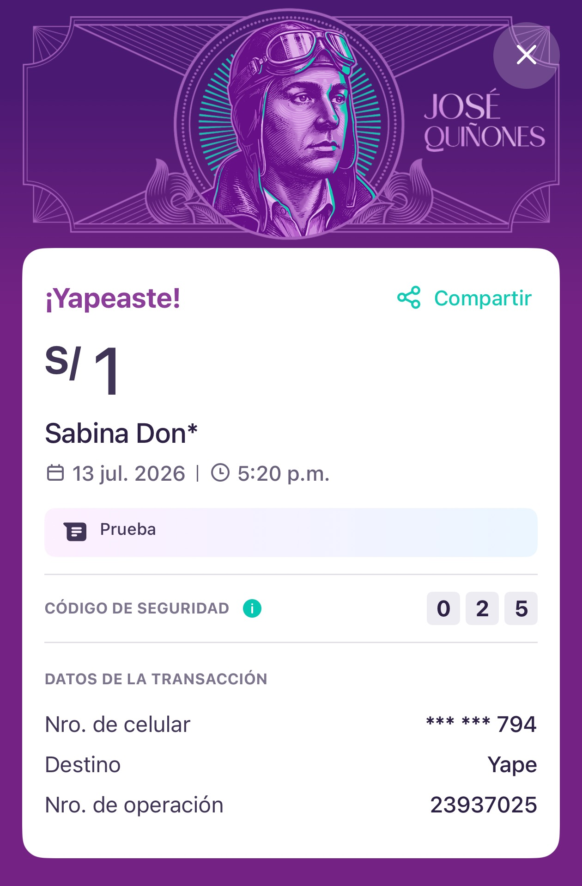

Everyone's wallet
Cash still matters in Peru, but its share of transactions has fallen steeply as fast payments took over daily commerce — with Yape and its interbank rival Plin carrying most of that shift.
Peru's favorite payment app has a counterfeit problem. To close it, I entered a stack I had never touched — and set one rule: prove every claim.
Yape receipts can be faked field by field — except one. I entered app development to build the merchant-side check that reads it: React, TypeScript, banking-grade security discipline, and a test protocol that proves the claim held.
An independent case study. Not affiliated with, endorsed by, or connected to Yape or BCP. Built against fabricated fixtures. No real payment, account, or ledger is involved.
Yape started as a way to send money to a phone number. It is now how a large share of Peru transacts daily.
It stopped being a transfer app years ago: credit, bill payments, a marketplace, remittances — a super app.
Its success created a new kind of crime: if everyone trusts the app's confirmation screen, fake the screen.
Cash still matters in Peru, but its share of transactions has fallen steeply as fast payments took over daily commerce — with Yape and its interbank rival Plin carrying most of that shift.
The typical scene is a market stall or bodega: a customer shows a payment confirmation, a queue waits, and the merchant has seconds to decide whether to hand over the goods.
The people most exposed are the ones financial inclusion was meant to serve — small merchants and independent workers, for whom one fake payment can erase a day's earnings.
A payment confirmation, on a phone, held up at your counter —
— an image, where every field is text that whoever made it can set.
The fake reproduces exactly what you are looking at. That is why staring harder fails.
Peru's wallet boom outran its trust infrastructure — and the fake receipt is the hole it left.
A security code shipped to close it. The public guidance still does not mention the code.
The people it hits hardest are the ones the inclusion story celebrates most.
I benchmarked three innovation-centre banks in markets comparable to Peru — Nubank, Nequi, Attijariwafa. All three treat verifiable payment trust as a core product surface, so the gap here is real, not invented. Two other candidates lost: merchant finance tools are a crowded, solved space, and onboarding flows drift into regulated identity territory. Payment trust won because it is real, urgent, and answerable in front-end code alone.

Give me the exact design system and I can build or redesign the whole app — but that is not the purpose. This case shows one real fraud problem, solved through front-end alone, with every framework, security, and codebase decision understood and backed by me.
I read the frontend requirements Peru's largest bank actually hires for, mapped them against my own skillset, and aimed this project directly at the distance between the two.
I left the vanilla web approach this whole site was built on and entered frameworks and app development, to experience first-hand what I am able to build.
I knew reshaping an already successful super app takes years. I chose instead to understand what solving a single banking problem with frontend truly takes.
How to read this. The five phases and their tasks are reconstructed from this build's own plan and completion record. Story points express relative effort between phases, not a recorded sprint artifact — this build was not run as a pointed sprint. Hours are planned-capacity estimates, off by default. No progress or completion percentage is shown, because a finished build has nothing left to forecast.
React draws every screen from the app's data, never the reverse — so what the merchant sees always matches what the app knows. In a trust tool, that guarantee is the product.
The one failure a verification tool cannot survive is a stale screen — "verified" still showing for a check the operator cancelled. React is built for exactly this: the interface is a function of state, read through its supported mechanism for stores that live outside the framework, so a verdict cannot tear under rapid updates. Vanilla — how this entire site is built — would mean hand-wiring every listener and owning every teardown, and this build's one real defect was precisely a missed listener. Angular would work, but brings a large, opinionated framework surface to a deliberately small single-job build; a smaller surface is faster to get right. That the banking sector's own job postings name React is convenient corroboration — the natural tool for the problem happens to be the one the industry already builds in.
TypeScript is JavaScript with a strict proofreader: it catches whole classes of mistakes before the code runs. In a tool that tells a merchant to trust a payment, that net is not optional.
Every receipt field, verdict state, and API response has a declared shape, so a malformed record cannot silently flow into a verdict. The compiler runs as a CI gate on every push — the same discipline production banking code expects: typed contracts, automated checks, continuous integration.
Think of the security layer as a film set: the heavy bank infrastructure is painted scenery, openly staged, while every lock the merchant actually touches is real, working, and tested.
The scenery demonstrates the sector's security vocabulary — TLS 1.2 encrypted exchanges, RSA-2048 key pairs, mutual certificate authentication, adaptive risk scoring — against fabricated material, badged SIMULATED throughout so no one mistakes a painted server for a real one. The lock is everything the merchant touches: an in-app keypad no third-party keyboard can read, digits that shuffle to defeat a watching eye, an execution lock against double-taps, a blocking overlay while the check runs, and privacy masking on every name and number. Neither side ever borrows credibility from the other.
Before trusting the build, I wrote a six-scenario testing protocol drawn from the case research: can it tell a fake from a real payment, and does it refuse to misfire under pressure?
1: a forged amount on a real operation number is caught and named. 2: a verdict stays reachable even when the user has never heard of the security code — an unreadable field is never scored as a mismatch. 3: a double-tap or mid-flight cancel can never fire the check twice or record a verdict the operator backed out of. 4: the action stays inert until its preconditions hold. 5: the busy overlay truly blocks the page. 6: privacy masking never leaks a full name or number. Results live in the dashboard below.
Of the five fields on a receipt, four — amount, recipient, date, even the security code — are text whoever makes the image can set. Only the operation number is written by the bank's own record. The security code looks like proof and ships on every receipt; it is text on the same image. Treating it as proof is the trap the tool exists to close.
The fastest artifact in this portfolio is also its most technical. That inversion is the finding.
Entering app development — new stack, new security discipline, new testing rigor — was supposed to be the slow, intimidating path reserved for career developers. Directed properly, it took under a week and produced the only work here whose claims a stranger can verify by running a test suite. The cost of entering a new stack has collapsed; what remains scarce is knowing what to build and how to prove it held.
What transfers: any stack a client's problem requires is now reachable — with every decision owned, and every claim checkable.
Method — figures counted from the repository and the recorded test run (Node 24.18.0, Vitest 3.2.7, TypeScript 5.9.3, 15 Jul 2026), verifiable at the linked source. Staged security demonstrations are described, and badged, in The Architecture above.
I believed app development belonged to career developers and computer scientists. This build broke that ceiling: I now work the technical side of a solution while owning every strategic call — especially the stack itself.
My fastest portfolio artifact yet — without typing a line of code, and without vibe-coding shortcuts. Every framework, security, and codebase decision was directed, reviewed, and understood by me. That is the superpower worth building.
Gemini compiled fifteen app screenshots into one master flow file and out-synthesized NotebookLM on the CEO interview. Claude Code executed deployment prompts I authored as reusable skills — every run directed, reviewed, and mine.
Banking is too wide to enter everywhere at once. A short, focused study pointed at one real fraud mechanism — approached purely through front-end eyes, not as UX, redesign, or innovation theatre.
The gap I did not close: this app checks a fabricated record. The same check, against a bank's real one, is a backend conversation — and the next thing I intend to be able to prove.